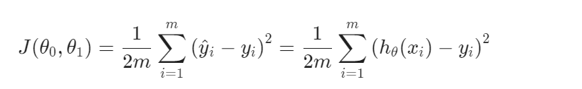

Given the training sets:
X and Y.
hypothesis: hθ(x) = θ0 + θ1x
θi's = θ0 and θ1 are the parameters of the model.
How to choose the parameters?
Choose θ0, θ1 so that hθ(x) is close to y for our training examples(x,y)
-----------------------------------------------------------------------------------------
The cost function is to measure the accuracy of the hypthesis function of model representation.
The cost function takes an average difference(actually a fancier version of an average) of all the results of the hypothesis with inputss
from x's and the actual output y's.

To Break it apart, it is 1/2 X bar, where X bar is the mean of the squares of hθ(Xi)-Yi, or the difference between the predicted value and the actual value.
This function is also called the "Squared error Function", or "Mean squared error".
The mean is halved(1/2) as a convenience for the computation of the gradient descent,
as the derivative term of the square function will cancel out the 1/2 term.